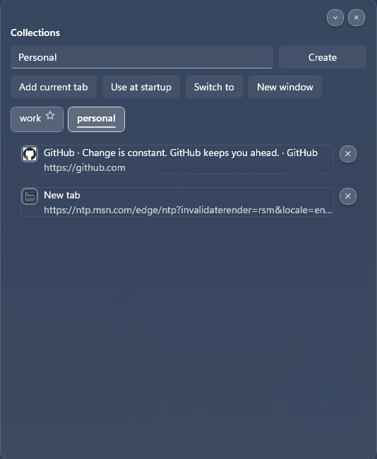
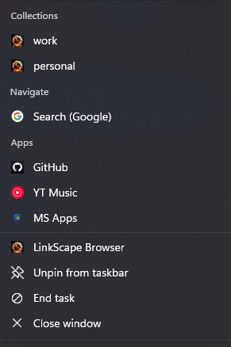

01
Jump-list shortcuts
Open Search, a saved Collection, or one of your recently installed web apps directly from Windows.
LINKSCAPE BROWSER
Version latest
NEW IN THIS RELEASE
This release adds active-tab activation packages for launching complete workspaces, plus Windows sharing for the current page and Linker responses.
01
Open Search, a saved Collection, or one of your recently installed web apps directly from Windows.
02
Turn supported websites into LinkScape apps with their own icon, focused app window, and quick launch entry.
03
Switch the current browser to a Collection or open that Collection in a separate window.
04
Favorites and History now use bounded database results, filtering, and incremental loading.
05
Trusted apps and scripts can open a complete tab package, replace or append tabs, select the active page, and optionally save the workspace as a Collection.
06
Send the current page snapshot and URL through the Windows Share panel, or right-click a Linker response to share that message.

